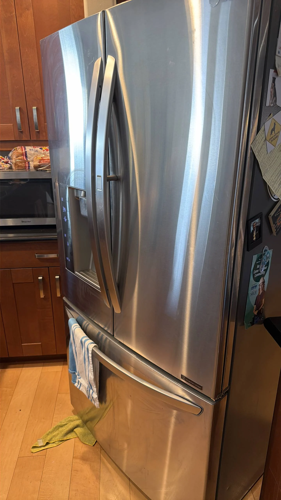

LG Refrigerator Makes a Loud Buzzing or Humming Noise — Possible Compressor or Condenser Fan Failure
A loud buzzing or humming noise from an LG refrigerator is often an early warning that one of the appliance's mechanical or electrical components is not operating correctly. While every refrigerator produces a certain amount of sound during normal operation, unusually loud buzzing, vibrating, or continuous humming should not be ignored. In many cases, the noise originates from the compressor or the condenser fan, although other components may also contribute to the problem. Identifying the source of the sound early can help prevent more serious failures and costly repairs.
Modern LG refrigerators rely on several moving components to maintain proper cooling. The compressor circulates refrigerant throughout the sealed system, while the condenser fan removes heat from the condenser coils and compressor. Both components operate together during the cooling cycle, and either one can produce abnormal noises if it becomes worn, damaged, obstructed, or electrically defective. Because these parts are located near the bottom rear of the refrigerator, many homeowners notice the sound coming from behind or underneath the appliance.
One of the most common causes of loud humming is a failing compressor. During normal operation, the compressor produces a low, steady humming sound as it compresses refrigerant and circulates it through the cooling system. As internal components begin to wear, however, the compressor may become noticeably louder. Worn bearings, internal mechanical damage, electrical problems, or difficulty starting can all create an unusually loud buzzing or humming noise. In some situations, the compressor may repeatedly attempt to start, producing several loud buzzing sounds before shutting off again.

A defective compressor start relay may produce similar symptoms. The start relay supplies power to the compressor during startup and helps the motor begin operating correctly. If the relay becomes damaged or fails electrically, the compressor may struggle to start, resulting in repeated clicking followed by a loud buzzing sound. Eventually, the compressor may stop starting altogether, causing the refrigerator to lose its cooling ability. Because compressor and relay failures often produce nearly identical symptoms, electrical testing is required to determine which component has failed.
Another frequent cause of loud refrigerator noise is a faulty condenser fan motor. The condenser fan pulls air across the condenser coils and compressor to remove excess heat generated during normal operation. If the motor bearings become worn, the fan blades become loose, or debris obstructs the blades, the fan may produce loud humming, buzzing, rattling, or grinding sounds. In some cases, the fan continues rotating but becomes increasingly noisy, while in others it slows down or stops completely, reducing the refrigerator's cooling efficiency.
Dust accumulation around the condenser fan can also contribute to excessive noise. Over time, dust, pet hair, and debris collect around the fan housing and condenser coils. As airflow becomes restricted, the fan motor must work harder to maintain proper cooling, increasing both operating noise and motor wear. Regular cleaning of the condenser area helps improve airflow, reduce noise, and extend the life of the refrigeration system.
Vibration is another possible source of buzzing sounds. Refrigerators naturally generate small vibrations while the compressor is running. If the appliance is not level, the rear cover is loose, water lines touch the cabinet, or internal tubing vibrates against metal components, these normal vibrations may become much louder. Homeowners sometimes mistake these vibration noises for compressor failure when the actual cause is simply loose hardware or improper installation.
The evaporator fan inside the freezer compartment may also create humming or buzzing noises under certain conditions. If frost accumulates around the fan blades because of a defrost system failure, the blades may strike the ice while rotating, producing loud buzzing or scraping sounds.
Although this type of noise originates inside the freezer rather than behind the refrigerator, it can easily be confused with condenser fan or compressor problems. Heavy frost buildup usually indicates an issue within the automatic defrost system that requires professional attention.
Many homeowners notice that the buzzing sound occurs only at specific times. For example, the refrigerator may become noisy immediately after the compressor starts, during periods of heavy cooling demand, or after the doors have been opened frequently. These patterns provide valuable diagnostic information because they help identify which component is operating when the noise occurs. Continuous loud humming that persists throughout the cooling cycle is more likely to indicate mechanical wear than occasional operating sounds that occur during normal compressor startup.
Several warning signs often accompany abnormal refrigerator noises. These include inconsistent cooling, longer compressor run times, excessive heat around the refrigerator, vibrating cabinet panels, intermittent clicking sounds, poor freezer performance, or higher-than-normal electricity consumption. If loud buzzing is combined with warm temperatures inside the refrigerator, the cooling system should be inspected as soon as possible to prevent food spoilage and additional component damage.
Diagnosing refrigerator noises requires careful inspection and electrical testing. Professional technicians identify whether the sound originates from the compressor, condenser fan, evaporator fan, start relay, or another mechanical component. They inspect fan blades for damage, test motor operation, measure electrical continuity, verify compressor performance, and check for vibration caused by loose panels or refrigerant tubing. Because replacing a compressor is significantly more expensive than replacing a fan motor or relay, accurate diagnosis is essential before any repairs are performed.
To reduce the likelihood of excessive operating noise, keep the condenser coils clean, maintain adequate clearance around the refrigerator for proper ventilation, ensure the appliance is level, avoid allowing debris to accumulate beneath the unit, and inspect the rear access panel periodically to confirm it remains securely fastened. Routine maintenance reduces unnecessary strain on the compressor and cooling fans while helping the refrigerator operate more efficiently.
If your LG refrigerator makes a loud buzzing or humming noise, the problem should not be ignored. A failing compressor, defective condenser fan, damaged start relay, excessive vibration, or another cooling system component may be responsible for the abnormal sound. Professional diagnosis can accurately identify the source of the noise and recommend the appropriate repair before the problem leads to cooling failure or more expensive damage. Prompt service helps restore quiet operation, improve energy efficiency, and extend the lifespan of your LG refrigerator.